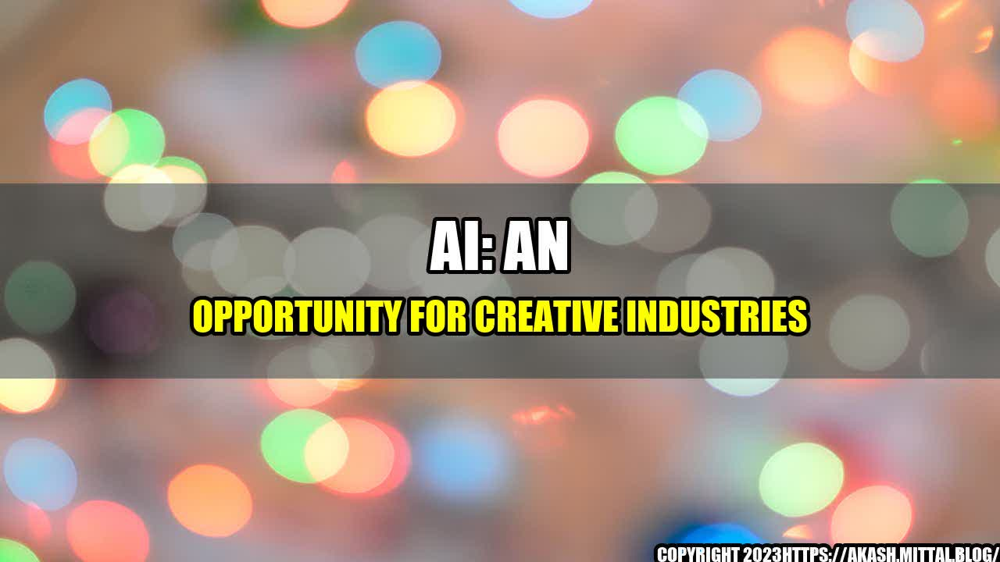

How AI is Revolutionizing the Creative Industry

When David Bowie passed away in 2016, his team of collaborators faced a daunting challenge. They were tasked with creating a posthumous album that lived up to the legend's artistic legacy. But instead of relying solely on their own expertise, they turned to artificial intelligence.
The team used a machine learning model to analyze Bowie's previous work and lyrics, and then generated new lyrics based on that analysis. The result was a hauntingly beautiful album, "Blackstar," that showcased Bowie's signature style while also pushing artistic boundaries.
AI in Creative Industries
The Bowie album is just one example of how AI is transforming the creative industry. Here are some other quantifiable examples:
- Netflix's recommendation algorithm saves the company $1 billion every year by suggesting personalized content to users.
- Adobe's AI tool, "Sensei," helps designers by automating repetitive tasks such as cropping and resizing images, saving them an average of 2.5 hours per week.
- The New York Times uses machine learning to analyze data on article performance and reader behavior, resulting in a 130% increase in digital subscriptions.
The Future is Bright: How AI is Creating Opportunities in Creative Industries
Conclusion: How to Make the Most of AI in Creative Industries
- Stay curious. AI is still a rapidly evolving field, and staying on top of the latest developments is key to understanding how it can benefit your industry.
- Collaborate. As the Bowie example shows, incorporating AI into the creative process doesn't have to mean replacing human expertise. It can enhance and augment it.
- Embrace experimentation. Some of the most successful AI applications have come from testing and iterating. Don't be afraid to try new things.
Case Study: The Future of Journalism with AI
As a journalist, I was initially skeptical of AI's potential to enhance my work. But after attending a workshop on AI for journalists, my mind was changed. The speakers showcased tools such as Narrative Science, which can generate news articles from data, and Wordsmith, which can translate data into human-readable insights. These tools not only save time but also provide valuable insights that traditional reporting methods might miss.
Practical Tips: Incorporating AI into Your Creative Industry
- Start small. Don't feel like you need to overhaul your entire process to incorporate AI. Instead, try implementing it in a small, targeted way and build from there.
- Invest in education. Whether it's attending workshops or hiring in-house experts, investing in education will ensure you stay ahead of the curve.
- Be transparent. As with any new technology, there are concerns about how AI will impact jobs and privacy. Being transparent about how you're using AI and its limitations can help alleviate these concerns.
References:
Category: Technology
Curated by Team Akash.Mittal.Blog
Share on Twitter Share on LinkedIn